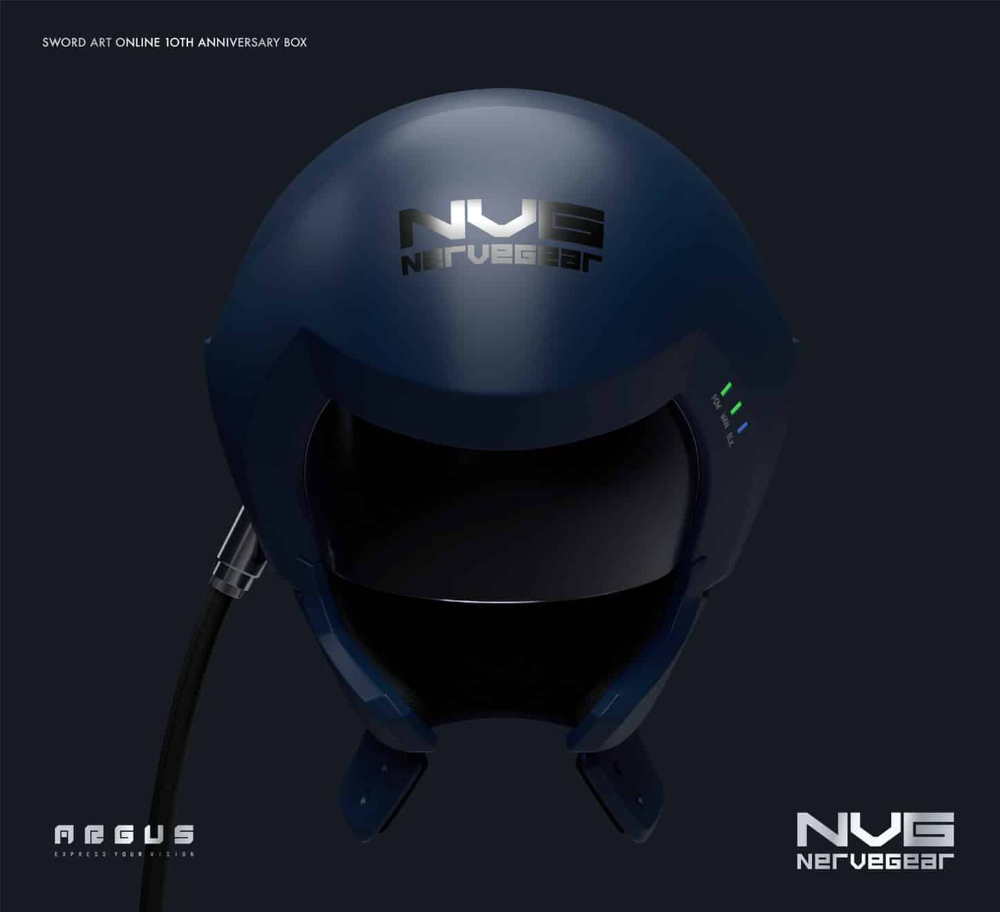

El NerveGear es un dispositivo de realidad virtual presentado en la serie de anime 'Sword Art Online'. Este maravilloso pedazo de tecnología puede ser tan letal como asombroso. El NerveGear es capaz de sumergir completamente a los usuarios en un mundo virtual, interceptando las señales que el cerebro envía al cuerpo.
En la trama de 'Sword Art Online', el 6 de noviembre es el día en que miles de jugadores inocentes quedan atrapados en un mundo virtual luchando por sus vidas. NerveGear es un dispositivo desarrollado por "ASCII Tech Works" aunque en la vida real aún no se ha recreado perfectamente, según dicen, puede llegar a ver la luz en un futuro no muy lejano.
La llegada de este casco al mercado puede llegar a suponer un progreso inimaginable en juegos de estilo RPG/Multijugador Masivo y en la realidad virtual mixta, ya que en caso de los juegos nos permitirá tener una relación extremadamente cercana con el resto de jugadores y disfrutar de todas las sensaciones que nos pueda brindar el mundo, desde el olor a la hierba hasta el frescor de la brisa marina en nuestro rostro, en caso de la realidad virtual mixta nos permitirá movernos por el mundo real en una forma holografica tridimensional con todos los beneficios dichos antriormente ya que se han hecho avances significativos en la tecnología de realidad virtual.
En el mundo de la Interacción Persona-Ordenador esto es un gran avance, al interceptar las señales cerebrales, el NerveGear permite a los usuarios interactuar con el entorno virtual de la misma manera que lo harían en el mundo real (esto podría hacer que las interfaces de usuario sean más intuitivas y fáciles de usar). Una tecnología como el NerveGear podría tener una amplia gama de aplicaciones, desde la educación y la formación hasta la medicina y la terapia. Para las personas con discapacidades físicas, el NerveGear podría ofrecer una forma de interactuar con la tecnología que no depende de las capacidades físicas, esto tambien los ayudaría a moverse de forma "física" por el mundo real.
Queda decir que este dispositivo todavia está en desarrollo y no ha salido al mercado, se estima que en un intervalo de entre 3 y 5 años salgan los primeros prototipos para testers Beta exclusivos.
